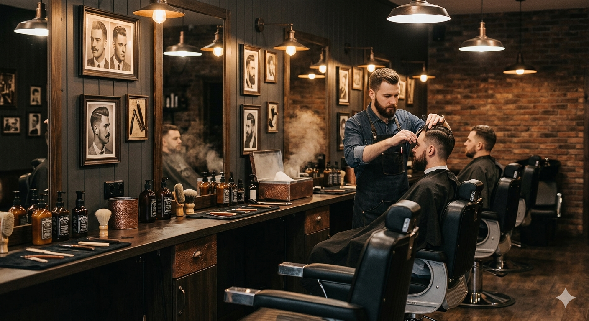

Front-end Developer
Создаю чистые, быстрые и красивые веб-сайты.
С вниманием к деталям и удобству пользователя.
То, над чем я работал

Премиальный сайт барбершопа
Полноценный одностраничный сайт с тёмным мужским дизайном, анимациями, формой записи и интеграцией с Telegram-ботом.
Следующий проект
Скоро здесь появится что-то новое
Привет! Меня зовут Андрей Сидоров. Я — начинающий Front-end разработчик из Белой Церкви.
Мне нравится создавать современные, удобные и визуально приятные веб-сайты. Я уделяю внимание не только тому, как сайт выглядит, но и тому, насколько комфортно им пользоваться.
Мой первый серьёзный проект — SydorovClub. Я полностью отвечал за дизайн, вёрстку, анимации и интеграцию с Telegram-ботом.
Сейчас активно развиваюсь в Tailwind CSS, JavaScript и Responsive Design. Ищу интересные проекты, где смогу применить свои навыки и продолжить расти как специалист.
Tailwind CSS
JavaScript
HTML5 + CSS3
Анимации
Responsive Design
Telegram API
Открыт к новым проектам, сотрудничеству и интересным задачам